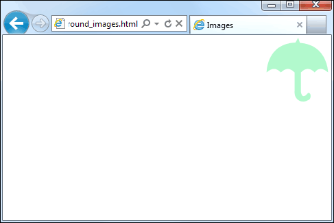

Background Images and Background Positions
You can set your backgrounds to be images, if you prefer. The CSS property to use is background-image. For the value, you specify the location of your image. This goes between round brackets and after the word url. The image name is surrounded with single quote marks:
BODY {
background-image: url('my_image.gif');
}
The same rules on image referencing you learned earlier apply here. The above code, therefore, references an image in the same folder as the current web page. You could place your background images in a folder called backgrounds. The code would then be:
BODY {
background-image: url('backgrounds/my_image.gif');
}
The default for background images is for them to be repeated. For example, if your background image is 100 pixels by 100 pixels this image will be copied until the whole of the screen is filled. This tiling can look awful. The image below shows this:
The background image we used above was a 200 by 200 gradient. It looks OK going from left to right (the X direction). But going down (in the Y direction) the tiling looks terrible!
To give you more control of background tiling, the CSS property background-repeat
is used. The property can take four values: repeat, repeat-x,
repeat-y, and no-repeat. For our gradient above, we want it to
only tile from left to right, in the X direction. So we need repeat-x:
BODY {
background-image: url('backgrounds/my_image.gif');
background-repeat: repeat-x;
}
Our background would then look like this:
Which is far superior!
Background Position
You can specify a position for background images. For that the CSS property
background-position is used. This property takes the following values:
top left
top center
top right
center left
center center
center right
bottom left
bottom center
bottom right
But you can also use pixels with X and Y values. It's also possible to use a page percentage. As a practical example, suppose you wanted a logo in the top right of your page. You could do it like this:
BODY {
background-image: url('backgrounds/logo_brolly.gif');
background-position: top right;
background-repeat: no-repeat;
}
The effect would be this:

Notice that we've used background-repeat with a value of no-repeat, otherwise we'd get a page full of brollies!
Here are some examples of the other values you can use:
background-position: 300px 100px;
background-position: 80% 0%;
With the pixel values (px) the X direction comes first, followed by the Y direction. A space separates the two. The same is true of the percentage values: X direction first, then Y direction, a space as the separator.
Try them out for yourself. You'll find the background images in the extra files that came with this course, in the extra_files/backgrounds folder. (If you haven't got the extra files yet, the download location is here, under the heading Web Design - New Course : Download the Extra Files needed for this course (You don't need the downloads for the old course.)
In the next lesson, you'll learn about image captions.